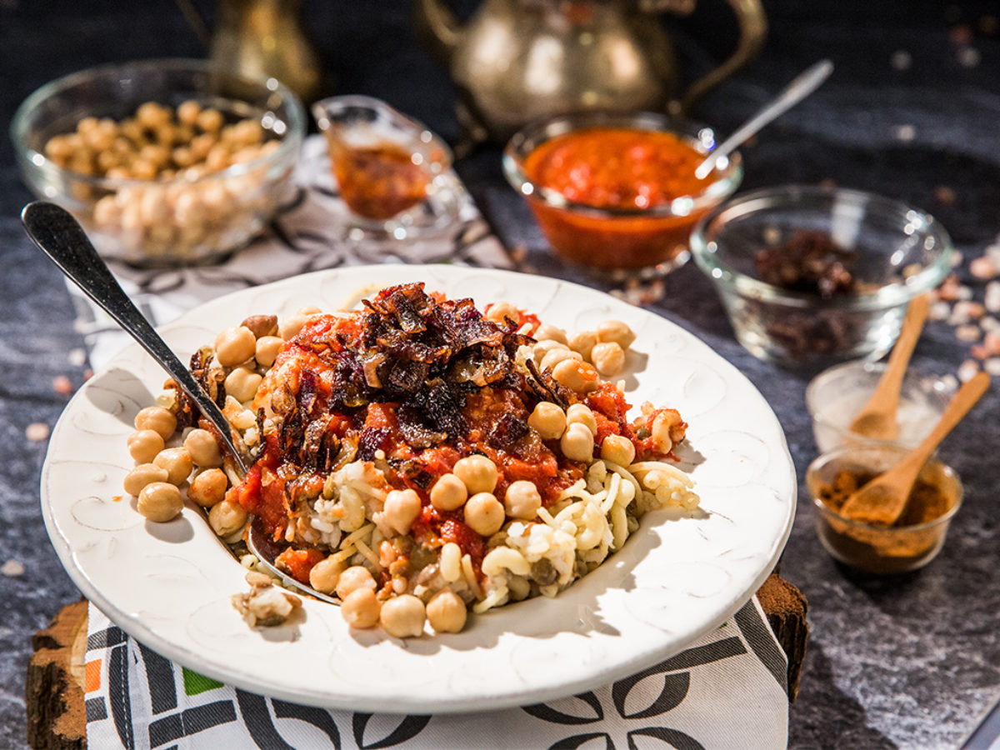

My fav food in egypt.
kushari
Egypt’s undisputed national dish is Koshary, a hearty and chaotic mix of rice, macaroni, lentils, chickpeas, and crispy fried onions, smothered in a spiced tomato sauce and garlic vinegar. Cheap and delicious, it represents the ultimate Egyptian comfort food.

ful we taameya
Ful (stewed fava beans) and Ta'ameya (Egyptian fava bean falafel) are the pillars of the traditional Egyptian diet. They are served with fresh flatbread, tahini, and salads. You can explore traditional recipes on The Mediterranean Dish Ful Medames Recipe and check out the Wikipedia Ta'ameya Entry.